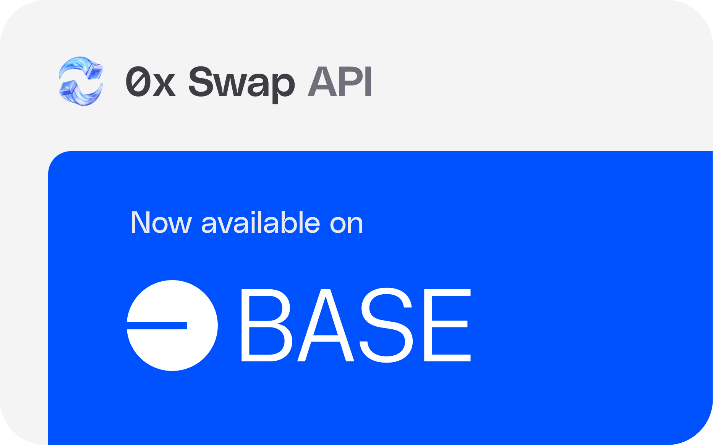
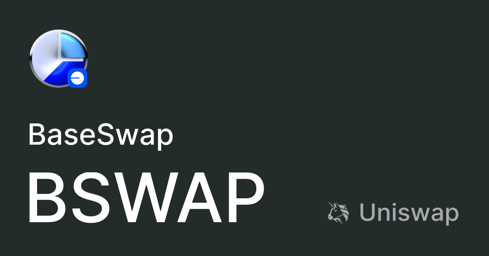

## The Wild, Wild West (and Slightly Confusing) World of Base Swap Aggregators
Okay, confession time. I'm not exactly a DeFi guru. I still occasionally accidentally send ETH to the wrong address (don't judge!). But I am fascinated by how quickly things are evolving in the decentralized finance space. One area that’s particularly caught my attention, and left me slightly bewildered at times, is the rise of base swap aggregators. It’s like watching a particularly ambitious toddler learn to walk – wobbly, unpredictable, and utterly captivating.
Remember the old days of comparing flight prices? You'd spend hours trawling Kayak, Skyscanner, and Google Flights, desperately hoping you hadn't missed a killer deal hidden in the fine print. Base swap aggregators, in essence, do the same thing, but for decentralized exchanges (DEXs). They're like meta-DEXs, searching across multiple platforms to find the best rate for your token swap. Sounds simple enough, right?
Well, it's not quite that straightforward. The early days were a bit… chaotic. Imagine the aforementioned toddler, but now armed with a rocket launcher. There were aggregators popping up everywhere, often with dubious security practices (let's just say I learned to be very careful about where I entrusted my hard-earned crypto!). Many failed spectacularly, leaving users scratching their heads and wondering if they'd accidentally stumbled into a crypto Wild West.
Things have matured – somewhat. The more established aggregators have invested in security audits and user-friendly interfaces. They've also gotten better at navigating the complexities of different DEXs, each with its own quirks and nuances. Think of it like evolution – the less-fit aggregators got weeded out, leaving behind the survivors, those better adapted to the volatile DeFi landscape.
But here’s where things get interesting (and maybe slightly confusing). Even with the improvements, there are still challenges. Gas fees remain a significant hurdle, especially on Ethereum. Finding the truly best price isn't always a guarantee; different aggregators will sometimes offer varying results. And let's be honest, the sheer technical complexity behind these things can be enough to send even the most seasoned crypto enthusiast running for the hills. Is it all worth the hassle? Sometimes, yes. Sometimes, maybe not.
One of the most exciting developments is the rise of multi-chain aggregators. They're not just limited to Ethereum anymore; they're venturing out into the wider world of blockchains, further expanding the options for users. It’s breathtaking to see this expansion, but it also brings a whole new layer of complexity. Think about managing a portfolio spread across multiple exchanges and chains – it’s a herculean task even for a seasoned professional.
So, where does this leave us? At the end of a somewhat bumpy, and unexpectedly exhilarating, ride. I started this journey with a simple curiosity about base swap aggregators. Now, I'm both impressed and slightly intimidated by the rapid evolution of this technology. The future looks bright, filled with the potential for greater efficiency and accessibility in the DeFi space. But navigating it successfully will require vigilance, healthy skepticism, and a solid understanding of the risks involved. And maybe, just maybe, a little less accidental ETH transfers.

## The Wild, Wild West (and Slightly Buggy) History of Base Swap Aggregators
Remember that time I tried to order a pizza online, only to discover fifteen different delivery apps, each with wildly varying prices and delivery times? That, in a nutshell, is what the early days of decentralized finance (DeFi) felt like – a chaotic, slightly overwhelming pizza-ordering experience for crypto. Specifically, when it came to swapping tokens, things were… messy. Enter the base swap aggregators, the pizza-delivery-app heroes of the DeFi world.
Before we dive into the techy bits (don't worry, I'll keep it light!), let's acknowledge the fundamental problem. In the early days of DeFi, you had to use individual decentralized exchanges (DEXs) like Uniswap, Curve, or Balancer to swap tokens. Imagine manually checking each one for the best rate. Exhausting, right? That's where aggregators stepped in, acting as a one-stop shop, comparing rates across various DEXs and routing your swap through the most efficient path. Clever, huh?
The first aggregators were… well, let's just say rough around the edges. Think of them as the first batch of pizza delivery apps – functional, but maybe a little clunky, with occasional glitches and questionable UI design. They faced challenges like gas wars (the equivalent of competing pizza places slashing prices to win your order), unpredictable slippage (your pizza suddenly costing way more than expected!), and the ever-present risk of smart contract vulnerabilities (a pizza delivery driver accidentally driving into a lake).
The evolution of these aggregators is fascinating. Initially, they were primarily focused on just finding the best price. Think of it as the "find the cheapest pizza" approach. However, as the DeFi ecosystem matured, so did the sophistication of aggregators. They started incorporating features like advanced routing algorithms (figuring out the most efficient pizza delivery route, avoiding traffic jams and construction), slippage mitigation techniques (protecting you from unexpected price increases), and even incorporating other DeFi protocols to optimize yields and minimize fees (getting you a free garlic knot with your order).
But here's where things get interesting. The development wasn't always a smooth, linear progression. There were periods of intense competition, leading to innovation and price wars but also, occasionally, to questionable practices and even outright scams. It was, quite literally, the Wild West of DeFi. Remember those early internet startups that promised the moon and sometimes delivered… meteor showers? Yeah, similar vibes.
And the tech itself? It's mind-bendingly complex. Imagine writing a program that can seamlessly interact with dozens of different blockchain protocols, each with its own quirks and limitations. That’s the kind of engineering prowess required to build a reliable and efficient aggregator. Honestly, I'm still slightly baffled by it all.
Looking back, the journey of base swap aggregators reflects the broader evolution of DeFi itself: a constant cycle of innovation, experimentation, and adaptation. It’s been a rollercoaster ride, fraught with challenges and unexpected twists. There have been moments of brilliance and, let's be honest, some embarrassing crashes along the way. But it’s a testament to the resilience and ingenuity of the developers who built it all, a reminder that progress is rarely a straight line.
So, next time you're swapping tokens in DeFi, take a moment to appreciate the complex machinery humming beneath the surface. It’s not just about swapping tokens – it’s about the evolution of a technology that’s still finding its footing, still striving to make the experience smoother, more efficient, and less like ordering a pizza from a chaotic, multi-app universe. And maybe, just maybe, one day, we'll have that perfect, glitch-free, surprisingly affordable pizza delivery… I mean, token swap. One can dream, right?
## Base Swap Aggregator: From Zero to (Almost) Hero – A Year in Review
Remember that time I tried to assemble IKEA furniture without reading the instructions? Complete chaos. Screws everywhere, a vaguely furniture-shaped pile of shame, and a deep-seated resentment towards Swedish flat-pack design. Building Base Swap Aggregator felt sort of like that, except instead of Allen keys, we wrestled with smart contracts, and instead of a wobbly bookshelf, we (hopefully!) built something useful.
It's been a wild year since we launched Base Swap Aggregator. A year of late nights fueled by questionable amounts of coffee, exhilarating breakthroughs, and moments of sheer panic where we seriously questioned if we’d accidentally created a financial black hole. But hey, at least we haven't yet been featured on any "Worst Tech Disasters" compilations (knock on wood!).
So, where are we now? What milestones have we actually achieved? Well, let's take a stroll down memory lane – or perhaps more accurately, a slightly bumpy, slightly caffeine-induced rollercoaster ride through the last twelve months.
First off, we actually launched. Sounds obvious, right? But anyone who's ever built anything remotely complex knows that "launch" is often a moving target, a shimmering mirage on the horizon. There were countless near-misses, moments where we were practically clinging to the cliff edge of despair, convinced our code was irrevocably broken. We even had one particularly harrowing debugging session that involved a frantic late-night pizza run and a lot of muttering about the inherent cruelty of the universe.
But we did it. We launched a Minimum Viable Product (MVP – which, let's be honest, sounds a lot more impressive than "barely functional prototype"). And that in itself was a victory.
Next came the user growth phase. This wasn't some smooth, exponential curve like the textbooks promise. It was more like a frantic, slightly erratic cardio workout – lots of ups and downs, punctuated by periods of anxious waiting. We saw small victories, like the first hundred users, then a thousand, and then… well, we’re still working on the million. Baby steps, people. Baby steps.
Beyond user growth, we managed to integrate with three major DEXs on Base. That, my friends, felt like climbing Everest in flip-flops. The technical hurdles were significant. It's a testament to our incredible team and their sheer stubborn refusal to give up.
There were other smaller wins: improved user interface (a massive undertaking), launching a basic API, and successfully navigating a couple of minor security audits (phew!). Each one felt like a small but significant victory, a tiny step further away from that initial pile of digital shame.
Looking back, it's tempting to focus solely on the achievements, to present a polished narrative of unwavering success. But that wouldn't be honest. There were setbacks, missed deadlines, and more than a few moments of self-doubt. The journey wasn't linear, it was messy and unpredictable. It was, in short, completely human.
This isn't a triumphant declaration of complete success. We're still iterating, still learning, still striving to improve Base Swap Aggregator. We have lofty ambitions that we are working hard to achieve. The journey to become a truly great DEX aggregator is far from over. But reaching this point, seeing the project develop and grow, and gaining the support of our community – that's what makes it all worthwhile. And hey, at least I now know how to assemble IKEA furniture. Mostly.
So, where do we go from here? That, my friends, is a question for another article – and perhaps another late-night pizza run.
## From "Choose Your Own Adventure" to "Just Tell Me the Best Route": How Base Swap Aggregators Changed the DEX Game
Remember those old "Choose Your Adventure" books? You'd flip frantically between pages, weighing the consequences of each decision – do I fight the dragon? Do I sneak past it? The thrill of the journey, sure, but also a LOT of agonizing over the details. Deciding which decentralized exchange (DEX) to use for a token swap felt a bit like that, not so long ago. You'd pore over gas fees, liquidity pools, potential slippage… it was exhausting. Then came the base swap aggregators, and suddenly, it felt less like a choose-your-own-adventure and more like… well, using Google Maps.
Early DEX tools were revolutionary, no doubt. Uniswap, SushiSwap – these were groundbreaking. They opened up a world of permissionless trading, democratizing finance in a way nobody could have fully predicted. But user experience? Let's just say it wasn't exactly intuitive. It was all about finding the best DEX for your specific trade, a process that often involved more research than actual trading. It felt a bit like comparing apples and oranges, only the apples were in different dimensions and the oranges spoke Klingon.
Now, with aggregators, it’s different. They've taken the complexity – that frustrating "Choose Your Own Adventure" element – and tucked it neatly behind the scenes. You input your trade, and poof! The aggregator quietly searches across multiple DEXs, finding the best possible route, factoring in fees, slippage, and all those other headaches. It’s the difference between manually routing a package across the country and just using FedEx – both get the job done, but one is infinitely simpler.
Of course, this simplification isn't without its quirks. I still find myself occasionally wondering what DEX the aggregator chose, purely out of intellectual curiosity. It's a little like knowing your food arrived via a complex network of trucks and planes but only seeing the finished dish on your plate. There's a bit of a "black box" element. And, admittedly, the whole "trusting a third-party aggregator" thing does give me pause – even if they're often audited and transparent. (Anyone else feel a slight pang of paranoia?)
But the advantages are undeniable. The ease of use has brought a whole new wave of users into the DeFi space, folks who might have been intimidated by the technical complexities of the earlier days. This broader adoption, in turn, strengthens the whole ecosystem. It's a classic case of "rising tides lift all boats," although maybe we should replace "boats" with "decentralized protocols" for maximum impact.
Looking back, the evolution from individual DEXs to aggregators feels almost inevitable. It's akin to how the internet itself evolved from individual websites to search engines. We needed a way to navigate the explosion of options, and aggregators became that navigational tool. The journey from fiddling with gas prices to effortlessly swapping tokens is a testament to the dynamism and innovative spirit of the DeFi space. And while a part of me still misses the thrill of the "Choose Your Own Adventure" aspect (maybe a niche market for retro-DEXes?), the convenience of aggregation wins out every time. It's a win-win, even if it involves a little bit of mystery. It’s less about conquering a digital dragon and more about getting that sweet, sweet yield. And that’s okay, too.
## The Great Base Swap Caper: Or, How I Learned to Stop Worrying and Love the Aggregator
Okay, so maybe "caper" is a bit dramatic. But last week, I was knee-deep in the fascinating, slightly mind-bending world of DeFi liquidity, and let me tell you, it felt like trying to solve a Rubik's Cube blindfolded while riding a unicycle. The goal? Maximize my yield farming profits, of course. The obstacle? The bewildering maze of base swaps and their…let's just say varied pricing.
I'd been using individual decentralized exchanges (DEXs) – you know, the usual suspects – and while they were fine, I felt like I was leaving money on the table. It was like picking up pennies in front of a bulldozer – sure, I was making something, but was I making the most? That’s where base swap aggregators come in. Think of them as the ultimate travel agents for your crypto – they scour the market, finding the best routes and prices across multiple DEXs to get you where you need to go, all in one smooth transaction.
Now, I’m not a DeFi guru. I’m more of a curious amateur, learning as I go. I confess, initially, I was skeptical. Aggregators sounded too good to be true, like those "get rich quick" schemes my uncle keeps emailing me (don't ask). What about hidden fees? What about slippage? What if my crypto vanishes into the ether (pun intended)? These were legitimate fears, and honestly, part of me still felt a little twitchy about handing over my precious tokens to some algorithm.
But then I did some digging. I looked at the smart contracts (okay, I skimmed them mostly; I’m not that brave), checked the audits (or at least the summaries of the audits – again, not a crypto auditor here!), and read countless blog posts. Slowly but surely, my skepticism began to melt away. The potential efficiency gains were undeniable.
Base swap aggregators are essentially doing what any good marketplace does: leveraging competition to drive down prices and increase efficiency. By simultaneously querying multiple DEXs, they find the best possible rate for your swap, minimizing slippage and maximizing your return. It’s like having a tiny, highly efficient crypto broker working 24/7, tirelessly optimizing your trades.
Of course, there are still nuances. Not all aggregators are created equal. Some offer better pricing on certain tokens or pairs than others. Some might have slightly different fee structures. Choosing the right aggregator requires a bit of research, and frankly, a pinch of gut feeling. I’ve found myself bouncing between a couple of different aggregators, depending on the specific trade I'm making, which feels a bit like choosing between different coffee shops – they all serve caffeine, but some have a better atmosphere, or a more appealing loyalty program.
So, where am I now? Well, my initial fears were largely unfounded. Using a base swap aggregator has undeniably improved my liquidity optimization. It’s not a magical solution that guarantees riches overnight (those emails from my uncle are still suspiciously alluring, though). But it’s a powerful tool that has streamlined my DeFi experience, made it more efficient, and, yes, even made it a tiny bit more fun.
This whole journey hasn't just been about maximizing profits, it's been about understanding the intricacies of the DeFi ecosystem. It’s been about learning to trust (within reason!), about navigating uncertainty, and about appreciating the sheer ingenuity of decentralized finance. And that, my friends, is a reward in itself. Now, if you'll excuse me, I have a few more base swaps to execute...and perhaps some more Rubik's Cube practice to get in.
## The Wild West of DeFi Just Got a Sheriff (Maybe?): Base Swap Aggregators and the User Experience Conundrum
Remember trying to find the best flight deal before those metasearch engines exploded onto the scene? You'd spend hours comparing Kayak, Expedia, Skyscanner – feeling like you were playing a bizarre, time-consuming game of digital whack-a-mole. That, my friends, is a pretty good analogy for navigating the decentralized finance (DeFi) landscape, specifically when it comes to swapping tokens. Until recently, anyway.
See, DeFi's promise – seamless, permissionless finance – often feels… less than seamless. Swapping tokens between different decentralized exchanges (DEXs) can be a fragmented, confusing mess. Each DEX has its own liquidity pool, its own fees, its own quirks. Finding the best deal often involves hopping between several platforms, a process that's both time-consuming and frankly, pretty irritating. And let’s be honest, the average user just wants to swap their ETH for some obscure meme coin without needing a DeFi PhD.
This is where the brave new world of base swap aggregators strides in. Think of them as the Kayak of the DeFi world, cleverly compiling data from various DEXs to find the most optimal swap route, minimizing slippage and maximizing your yield. Sounds amazing, right? And in theory, it is.
But here’s where I get a little hesitant. It’s still early days. While the promise of streamlined token swapping is undeniably alluring, we need to acknowledge the potential downsides. Are these aggregators truly decentralized? What happens if one of the underlying DEXs experiences a glitch? Does the aggregator's own security model hold up under pressure?
It’s the classic DeFi double-edged sword. We want the convenience and efficiency of a centralized system, but we’re also wary of losing the decentralization that makes DeFi so appealing in the first place. It’s a bit like wanting to eat your cake and have it too – a delicious, yet inherently contradictory desire.
This isn't to say that base swap aggregators are inherently bad. Far from it. They represent a crucial step forward in improving the user experience of DeFi. Making the space more accessible to a broader audience is vital for its continued growth and adoption. Imagine grandma finally understanding how to swap her ETH for a little bit of that shiny new SHIB – that’s progress!
However, we need to approach this technological advancement with a healthy dose of skepticism. Thoroughly vetting these aggregators, understanding their security mechanisms, and comparing their fees are crucial steps before entrusting them with our hard-earned crypto. It’s not enough for them to simply exist; they need to prove themselves worthy of our trust.
And that brings me back to the beginning. My initial skepticism aside, I can’t help but feel optimistic. The evolution of base swap aggregators represents a direct response to user demand. It’s a testament to DeFi's dynamism, its ability to adapt and improve based on the needs of its community. The journey to a truly user-friendly DeFi experience might be bumpy, filled with its fair share of potholes and unexpected detours – but I, for one, am excited to see where this road leads. Maybe, just maybe, the Wild West of DeFi is finally getting a little bit more civilized. And that, in itself, is worth celebrating.
## Why Base Swap Aggregators Are the Next Big Thing (And Why I’m Still Slightly Confused)
Okay, confession time. I’m not exactly a crypto wizard. I’m more of a “watched a YouTube tutorial on NFTs once” kind of guy. But even I can see the potential of base swap aggregators. And honestly, that’s kind of terrifying, in a good way. It’s like witnessing the evolution of the internet all over again, but this time, with slightly less dial-up screeching.
For those not in the know (like me, a few weeks ago), a base swap aggregator basically acts like a Kayak for decentralized exchanges (DEXs). Remember how frustrating it used to be to check dozens of flight websites individually? Now, you just pop your details into Kayak, and it finds you the best deal. That’s what a base swap aggregator does for DEXs: it compares fees, liquidity, and slippage across different platforms to get you the best possible trade.
Simple, right? Well, yeah, in theory. But the implications are mind-boggling. We're talking about a potential explosion in DEX usage. Suddenly, the average Joe (or Jane, let's be inclusive!) doesn’t need to be a DeFi guru to navigate the often confusing world of decentralized trading. Think about it: less technical hurdles equals more adoption. And more adoption equals… well, more crypto adoption! (Cue triumphant, slightly cheesy music.)
Now, I know what you’re thinking: “This sounds too good to be true.” And honestly, a tiny part of me agrees. There are still kinks to work out. Security concerns will always be paramount in the crypto space. And what about the inherent complexities of different blockchain networks? Won't that still pose a challenge? I mean, we’re not quite at the “plug-and-play” stage yet, are we? (Though, maybe closer than we think.)
But the potential benefits overshadow these initial reservations. Think about the increased efficiency. Imagine a future where swapping tokens is as frictionless as buying a coffee (well, almost). That’s the promise of base swap aggregators. They democratize access to DeFi, making it less niche and more mainstream.
It’s also fascinating to consider the impact on the DEX landscape itself. With aggregators acting as a comparison engine, DEXs will be incentivized to offer the most competitive fees and liquidity. It's a bit like a healthy dose of market competition, leading to better services for everyone. It's a win-win, or at least a “win-mostly-win,” situation.
So, where does this leave us? At the cusp of something potentially huge. I started this article a little skeptical, admitting my own lack of deep DeFi knowledge. But as I’ve delved deeper, I’ve become increasingly convinced that base swap aggregators are a game-changer. They’re not just a technological upgrade; they represent a fundamental shift in how we interact with the decentralized world.
It's like watching a young sapling grow into a mighty oak. We're still in the early stages, there will be bumps in the road, and I'm still slightly baffled by some of the technical jargon. But the potential is undeniable. And that, my friends, is what makes this whole journey so incredibly exciting. The journey itself – the questioning, the learning, the gradual understanding – is what matters as much as the destination. It’s a thrilling time to be a part of this space, even for a crypto newbie like myself.

## My Accidental Dive into Base Swaps: Are Aggregators the Future of Crypto Trading?
Okay, confession time. I’m not exactly a crypto whiz kid. I remember the initial Bitcoin hype, vaguely understood the blockchain concept (ish), and dabbled a bit during the 2017 bull run – mostly losing money and questioning my life choices. So, when a friend excitedly explained base swap aggregators to me, my initial reaction was somewhere between bewildered confusion and mild panic. “Wait, another layer of complexity?” I grumbled, visions of complicated spreadsheets and unexplained fees dancing in my head.
But then he showed me the numbers. And, well, the numbers were pretty compelling. Think of it like this: you're trying to find the cheapest flight to Bali. You wouldn't just check one airline's website, right? You'd use Google Flights or Skyscanner – an aggregator that combs through dozens of options to find the best deal. Base swap aggregators, in a nutshell, do the same for crypto trades, searching across multiple decentralized exchanges (DEXs) for the most favorable rates.
Now, I’ve always been a creature of habit. I’m comfortable with my trusty old centralized exchanges (CEXs). They’re familiar, relatively straightforward, and (mostly) secure. The user interface is slick, and I'm used to their order books and limit orders. Changing feels… well, it feels like swapping my perfectly worn-in sneakers for some experimental newfangled footwear. Will they be comfortable? Will I trip and fall? (Spoiler: I'm already slightly anxious about the "gas fees" – another layer I need to wrap my head around).
But here's the thing: CEXs, for all their polish, have their drawbacks. They often charge hefty fees, and that feeling of having your funds held in a custodial account isn't exactly the epitome of decentralized freedom. You're trusting a third party with your crypto – a trust that’s been repeatedly shaken by various hacks and regulatory crackdowns. And let's be honest, some CEX interfaces are as intuitive as navigating the back end of a Soviet-era mainframe computer.
Base swap aggregators, on the other hand, at least offer the promise of a more transparent and decentralized experience. While the user interface might not be as polished as a CEX, the potential cost savings can be significant. Plus, the whole "self-custody" thing, while potentially terrifying for a newbie like me, feels… empowering? It's like finally taking the training wheels off your crypto bike. Although I may fall a few times before I become comfortable with it.
Of course, there are downsides. Navigating the different DEXs can be confusing, understanding gas fees requires a degree in quantum physics (I'm exaggerating, but only slightly), and the security implications are something I need to ponder more deeply. There’s a learning curve involved, and frankly, that’s a little intimidating. Maybe I'm just a grumpy old Luddite clinging to my familiar CEX. Perhaps I am.
But my journey of exploration isn’t over. This isn't a definitive "Base Swaps are better!" declaration; it's more of a “Hmm, maybe there’s something worth exploring here” reflection. I’m still figuring things out, slowly tiptoeing into the world of base swaps, one cautious step at a time. And the journey, with all its uncertainty and occasional head-scratching moments, is proving more interesting than I initially anticipated. Maybe that’s the beauty of it – the discovery, the learning, the small victories of understanding a system that initially felt utterly alien. And, you know what? Maybe those newfangled crypto sneakers aren’t so bad after all. At least, once I figure out how to tie them properly.
## The Wild, Wild West of Base Swaps: Why I'm Both Excited and Slightly Terrified
Okay, confession time. Last week, I tried to swap some obscure ERC-20 token for another, equally obscure ERC-20 token. Think trying to trade Beanie Babies for Pogs in 1998, but with slightly less nostalgia and a whole lot more blockchain jargon. It was…an experience. Multiple transactions, absurdly high gas fees, and a general feeling that I was navigating a digital labyrinth built by mischievous gnomes. This, my friends, is where the potential of Base Swap Aggregators comes in – and where my slight terror stems from.
Now, I'm no crypto guru. I’m more of a curious observer, slightly bewildered by the whole thing, to be honest. But even I can see the immense potential of these aggregators. Imagine a Kayak for decentralized exchanges (DEXs). Instead of manually hunting for the best flight deal, you input your needs, and the aggregator magically finds the cheapest and fastest route across different DEXs, saving you time, gas fees, and a potential migraine. Sounds idyllic, right?
But here's where the "slightly terrified" part kicks in. We're talking about a still-evolving Web3 landscape. It's the Wild West out there, folks. There's a lot of promise, but also a whole lot of potential for… well, let's just say "unintended consequences." Think about the early days of the internet – dial-up, Netscape Navigator, and websites that looked like they were designed by a caffeinated ferret. There were gems, sure, but navigating it often felt like wading through a swamp of questionable content and pop-up ads. Could we see a similar scenario with Base Swap Aggregators? Will we end up with a few dominant players, creating a new kind of centralized control in a supposedly decentralized space? It’s a genuine concern.
Furthermore, security is paramount. These aggregators will be handling significant amounts of user funds. A single vulnerability could have catastrophic consequences. Building trust in this space will be crucial, and that’s a hurdle that requires significant effort and transparency. Can we truly rely on these platforms, given the inherent risks involved? It's a question that keeps me up at night, alongside the usual concerns about whether I locked my front door.
However, the potential benefits are undeniable. Increased liquidity, lower fees, and improved user experience are all incredibly attractive propositions. Imagine a world where swapping tokens is as seamless as buying a book on Amazon. This isn't just a utopian dream; it’s a realistic possibility, fueled by the innovative work happening in the Base Swap Aggregator space.
So, where does that leave us? Somewhere between excited anticipation and cautious optimism, I think. The journey to a fully-fledged, reliable, and secure Base Swap Aggregator ecosystem won't be easy. It'll be a bumpy ride, full of unexpected twists and turns, perhaps even a few near-misses with those mischievous digital gnomes. But if we navigate it carefully, thoughtfully, and with a healthy dose of skepticism, the rewards could be transformative. And maybe, just maybe, I’ll finally be able to swap those obscure ERC-20 tokens without feeling like I’ve just completed a particularly difficult escape room. Now, if you’ll excuse me, I’ve got some more Beanie Babies... I mean, tokens to trade.
tags: DeFi, Decentralized Finance, Base Swaps, Aggregators, Yield Farming, Liquidity Pools, Automated Market Makers (AMMs), DeFi Protocols, Cryptocurrency, Blockchain Technology